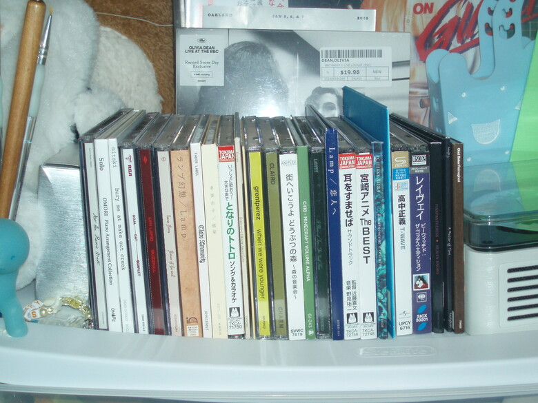

Right above this photo is a collection of my CDs. Each disc holds a unique story, a melody that resonates with my soul. They are not just music; they are memories, emotions, and moments frozen in time. Each CD represents a chapter of my life, a soundtrack to my journey.
Users can hover over each CD, and when clicking on the CD, shows my experience with the CD. Below is an example of an overlay when the user presses the CD.